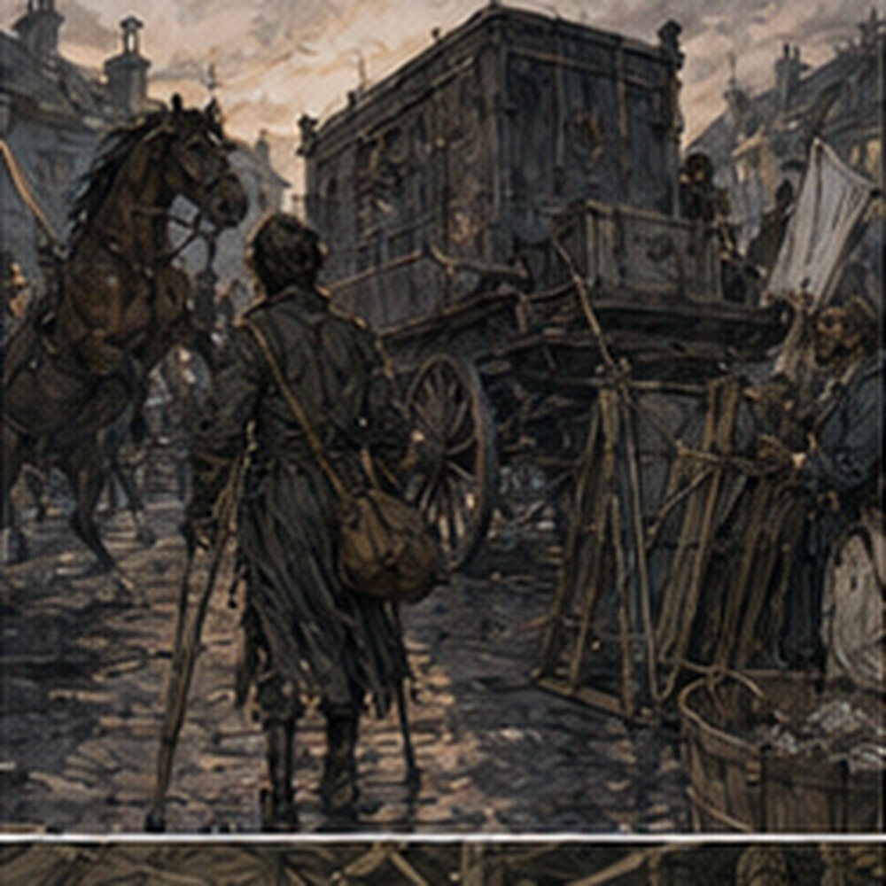
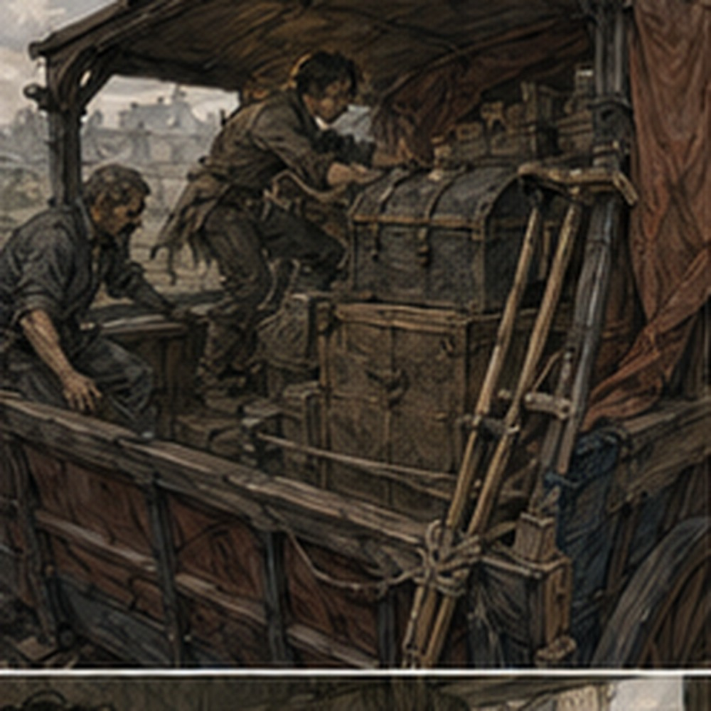
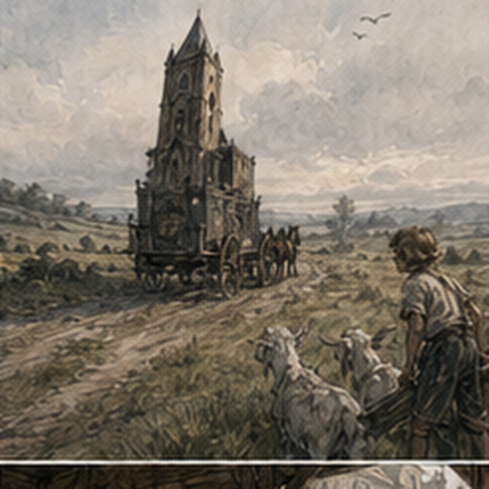

Before sunrise, Carrow smelled like horses. Not only horses. Wet stone. Cold ash. Yesterday's beer outside a tavern that had closed recently enough for two men to still be arguing beside it. Bread somewhere I could not see. River damp under everything. But mostly horses.
I arrived at the theatre with my bag over one shoulder and discovered that I was late. I was not late. The sky was black. Teren had said before sunrise. This was before sunrise. The problem was that theatre people apparently interpreted departure times the way they interpreted scripts. The alley was already full.
One wagon stood backed almost to the theatre doors, canvas rolled over its top rails. Another waited crooked behind it with a horse that looked personally offended by the hour. Scenery leaned against both walls. A painted window rested upside down on a crate marked COSTUMES, and somebody had put three swords into a basket with a cabbage. I stopped. The cabbage was real.
"Why?"
The soot-shirt worker looked up from a coil of rope.
"What?"
I pointed. He followed my finger.
"Oh."
He took the cabbage out.
"Thank you."
He put it on a chair. That was not better.
"Gregory!"
Teren appeared in the theatre doorway carrying a lamp in one hand and a boot in the other.
"Why do you have one boot?"
"Not mine."
"Whose?"
He looked at it.
"No idea."
He threw it into the wagon. A woman inside shouted, "Fuck you."
"Found your boot."
"I was wearing the other one."
"Then you're halfway done."
Teren disappeared again. I stood in the alley with my bag. This was the organization I had joined. No. Not joined. Traveling with. Important distinction. The servant actor was sitting on the rear edge of the first wagon drinking something from a tin cup. He had a blanket around his shoulders and looked much less cheerful than usual.
"You came," he said.
"I said I would."
"People say things."
"What are you drinking?"
"Regret."
"Is it hot?"
"Not anymore."
He moved his cup and made space beside him. I did not sit.
"Where are the crutches going?"
He pointed toward the wagon rail. I inspected it. Someone had already tied a broom there.
"That is where you said."
"Yes."
"There is a broom."
"We'll move the broom."
"Where?"
He looked at me over the cup.
"Gregory."
"What?"
"The broom will survive."
I set my bag down. The extra cord was in the top section because I had planned properly. I found it immediately. That felt good. Then I spent several minutes trying to determine the best way to secure two crutches to a wagon that was still being loaded by people who did not respect fixed geometry. Every time I chose a position, someone needed the rail.
"That's scenery."
"I can see that."
"Then move."
"I am attaching mobility equipment."
The soot-shirt worker had one end of the painted tower on his shoulder.
"You can attach it after the tower."
"The tower blocks the rail."
"Only until we unload it."
"That is tomorrow."
"Exactly."
I stared at him. He stared back. The tower won. I moved. A second actor I knew mostly as a guard carried a crate past us.
"Put them inside."
"Where?"
He jerked his head toward the wagon. I looked. The inside contained three people, four costume trunks, rolled fabric, a basket of kitchen things, two spears, one painted moon, and the cabbage. The cabbage had returned.
"No."
The guard shrugged.
"Then walk."
"Fuck you."
"Morning."
He kept going. The recurring woman arrived from the street carrying two bags and a long wrapped bundle. Her hair was tied up badly. She looked awake in the technical sense only. She saw me.
"You're here."
"Yes."
"Why?"
I frowned.
"You told me there were shopkeepers in other towns."
She stared for a second. Then remembered.
"Oh."
She handed me one of her bags. I nearly dropped it.
"What is in this?"
"Shoes."
"How many feet do you have?"
"Depends on the show."

She walked into the theatre with the other bag. I looked at the one she had left me. It was heavier than my travel bag. The servant actor sipped his regret.
"Princess."
"I know."
"Do you?"
"No."
I carried the shoe bag three awkward steps and put it beside the wagon. That counted as loading. Useful. The theatre emptied itself by degrees. Not neatly. Nothing came out in the order I would have chosen. A small table emerged before the legs that belonged to it. Costumes came before the trunk meant to hold them. A rolled backdrop was carried into the alley, returned inside because it was the wrong one, then brought out again because apparently the wrong one was coming too.
I stopped trying to understand the whole operation. That helped.
"Greg."
I turned. Teren stood beside the second wagon with a paper in his hand. Not Gregory. Greg. I waited. He looked at the paper.
"You're in this one."
"Which?"
"Second wagon."
"Why?"
"First is full."
"It was full twenty minutes ago."
"Now it is more full."
"Where do I sit?"
He pointed. There was no seat.
"There."
"That is a crate."
"Yes."
"What is in it?"
"Curtain weights."
"How heavy?"
"Enough."
"I am not sitting on curtain weights for three hours."
Teren looked into the wagon.
"Move the weights."
"To where?"
He looked around. I waited. Teren pointed at the first wagon. The servant actor shouted, "No." Teren pointed at the alley. The soot-shirt worker shouted, "No." Teren looked at me.
"You see the problem."
"Yes."
"Good."
"That does not solve it."
"No."
He walked away. I hated theatre. A little later, the curtain weights went under the rear bench, the rear bench moved forward, two costume trunks traded wagons, the painted moon went flat beneath a stack of fabric, and the crate became a seat after all. Not the curtain-weight crate. A different crate. This one contained cups. I sat carefully. It held. Good.
My crutches were finally tied along the inner rail beside me, handles forward, cuffs wrapped in a scrap of cloth so the wood would not knock against the wagon every time we hit a rut. I had used one cord. The soot-shirt worker had watched me finish, tugged the knot once, and added a second knot above mine.
"What was wrong with mine?"
"Nothing."
"Then why?"
He had already walked away. I left both knots. The sky had begun turning from black to gray by the time the horses moved. There was no announcement. No speech. No count. Someone shouted that a lantern was still inside. Someone else shouted that it could stay there. The first wagon rolled forward anyway. Our driver swore. The horse moved.
The wagon lurched hard enough that I caught the rail with both hands. A cup inside my crate rattled. Then another. Then all of them. We rolled out of the alley. That was departure. I looked back once. The theatre doors were still open.
Teren stood in them with the lamp, shouting at someone I could not see. For one alarming moment I thought we had left him. Then he ran after the wagon carrying the unidentified boot. He climbed onto the back of the first wagon while it was moving. Nobody reacted. Carrow passed slowly around us. Shuttered shops. Dark upper windows. A baker carrying a tray through a side door. A woman sweeping yesterday out of a doorway.
The streets I knew looked narrower from the wagon because I was not choosing where to put my feet or crutches. I was simply being carried through them with cups under my ass. The city gate appeared. We went through. No one stopped us. Then Carrow was behind us. I turned forward. The road was terrible. Not immediately. For perhaps fifty yards it was acceptable. Then the paving ended. The wagon dropped into a rut. Every cup beneath me jumped. I jumped with them.
"Oh."
The guard actor sitting across from me opened one eye.
"First wagon trip?"
"No."
He closed his eye.
"This one."
"Yes."

He smiled without opening his eyes. I adjusted my position. My left side did not like the crate edge. I shifted. My right foot needed somewhere to brace, but every useful surface already belonged to luggage or another person's boots. The recurring woman sat near the front with her back against a costume trunk, knees drawn up beneath a blanket. She had somehow acquired the cabbage. She was eating it. Raw. I watched. She noticed.
"What?"
"Nothing."
"You're staring."
"I was determining whether it was a prop."
She took another bite.
"It is now."
The cabbage had a bite missing from one side. I looked away. The road shook us east. For the first hour, nobody was interesting. This surprised me. Theatre people were extremely interesting inside a theatre. On the road they slept. The guard actor slept with his head against the side rail and woke every time it struck him. The recurring woman slept with the cabbage in her lap. A thin older man I had seen playing fathers and magistrates put his hat over his face and disappeared completely.
The driver did not sleep. Good. I tried to read page twelve. Impossible. The words moved. I knew they were not moving. That did not help. I got through four lines before the wagon struck a stone and the script hit me in the mouth. I folded it. The clerk could wait. The countryside east of Carrow was flatter than I remembered.
Fields spread beyond low walls and hedges, wet with morning. Smoke rose from farmhouses in thin gray lines. We passed a boy driving goats the opposite direction. He stared at the painted tower sticking above the first wagon. One goat stared too. The boy waved. Someone in the first wagon waved back with a severed wooden hand. The boy stopped waving. I laughed. The recurring woman opened one eye.
"What?"
"Nothing."
She closed it. A mile later the servant actor climbed from the first wagon to ours. While both were moving. I watched him step onto the rear rail, catch the side of our wagon, and swing across the gap.
"No."
He landed beside the driver.
"What?"
"You cannot do that."
"I just did."
"That does not make it safe."
"It makes it possible."
"That is not the same thing."
He climbed over a trunk and sat on the floor near my crate.
"Move your foot."
"I only have one available."
"That one."
I moved it. He stretched his legs into the space.
"Why are you here?"
"King snores."
"The guard snores."
The guard opened his eyes.
"No."
"You do."
"No."
"You were."
"I was breathing."
"With your throat closed."
The guard shut his eyes again. The servant actor leaned his head against the crate. For a while we rode in silence. Then, without moving, he said, "Your sword was better late." I looked at him.
"At the market hall?"
"Yes."
"Why?"
"You stopped trying."
"I did not."
He opened one eye.
"You did."
"I was still performing."
"Not what I said."
I waited. He closed his eye again.
"That is not useful criticism."
"Wasn't criticism."
"What was it?"
"Observation."
"Hessa does that."
"Who?"
"Never mind."
The wagon hit another rut. His head knocked against the crate. He swore. I smiled.
"Do you always travel like this?"
"No."
"What changes?"
"Worse roads."
"That is not what I meant."
"I know."
He sat up and rubbed the back of his head.
"Sometimes we have three wagons. Sometimes one. Sometimes horses. Once a boat."
"A boat?"
"Bad."
"Why?"
"Actors."
"That explains nothing."
"It explains the boat."
The recurring woman spoke without opening her eyes.
"He vomited on the king."
The servant actor pointed at her.
"Different king."
She smiled beneath the blanket. I looked between them.
"How many kings have there been?"
"Too many," she said.
"Four," he said.
"Six."

"Those two don't count."
"They wore crowns."
"One was a child."
"Still king."
The older man beneath the hat said, "Seven." Everyone looked at him. He did not move the hat. The servant actor frowned.
"Who was seven?"
"Pel."
"Pel wasn't king."
"Winter show."
"Oh."
The servant actor leaned back.
"Seven."
The hat remained over the older man's face. I looked at the road. This was apparently history. Not important history. Better. By the second hour my hands were fine. My shoulders were not. Neither was my ass. The crate had developed corners it had not possessed when we left. I shifted again. The recurring woman noticed.
"You can take the floor."
"I am not sitting on the floor."
"Why?"
"Getting up."
She looked at the space beside her. Then at my crutches. Then back at me.
"Right."
No apology. No pity. She moved one of the shoe bags and pushed a folded blanket toward me with her foot.
"For the crate."
I took it.
"Thank you."
"Don't make it strange."
"I said thank you."
"Exactly."
I put the blanket beneath me. Better. Much. I did not tell her how much. She knew. The sun came up properly. The fields turned gold-green. Mist stayed low in the ditches. Birds moved ahead of the wagon and then settled behind us again, irritated by the interruption.
At some point I realized I had not thought about mana since leaving Carrow. Then I had. Annoying. I looked at the road instead. The first stop appeared as a cluster of buildings around a crossroads, with a stable, a well, and an inn whose sign had lost enough paint that the animal on it might have been a fox or a burning dog. The first wagon pulled in. Ours followed. When we stopped, everyone became alive at once. Blankets came off. Bodies unfolded.
The guard actor climbed over me before I could object. The recurring woman stood on the wagon bed and stretched until her back cracked. The servant actor jumped down. I reached for my crutches. The knots were still tight. Both of them. Good. I untied the first. The second had pulled hard under vibration and would not loosen. I worked at it. Nothing. The soot-shirt worker appeared beside the wagon.
"Problem?"
"No."
He watched me pull at the knot.
"Problem."
"It tightened."
"Yes."
"You tied it."
"I improved it."
"You trapped my crutch."
He climbed onto the wheel hub, reached over the rail, and pulled one short end I had not noticed. The knot fell open. I stared. He handed me the crutch.
"What was that?"
"Slipped hitch."
"Show me."
"Later."
He jumped down. I looked at the cord. Then at him.
"Later when?"
"Not now."
He walked toward the stable. The servant actor passed carrying two cups.
"Welcome to theatre."
"That was rope."
"Everything is theatre if Teren hasn't paid you."
I got down from the wagon. Right foot. Crutches. Weight. My body objected to becoming vertical. Not pain. Stiffness. A deep complaint through my back and shoulders, plus the unpleasant certainty that the crate had permanently altered the shape of me. I stood still. The recurring woman landed beside me.
"You alive?"
"Yes."
"Good."
She walked toward the inn with the cabbage. I took one step. Then another. My body remembered walking. Mostly. Three hours. We had another three or four after this. I looked at the wagons. At the road east. At the cup crate. The servant actor came back and handed me one of the cups.
"What is it?"
"Regret."
I drank. Tea. Cold. Terrible. I drank again. The first wagon horse sneezed. Somewhere inside the inn, Teren was already arguing about food. I smiled into the cup. The road was awful. I was glad I had come.